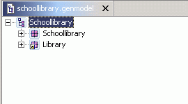
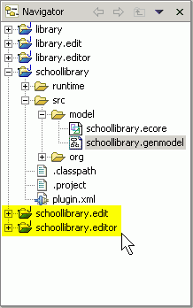
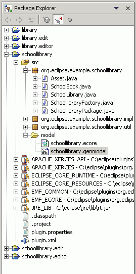

Generating an Extended EMF Model
Top
Previous: Creating a New EMF Model Project from a Rose Model or Java Interfaces
Next: Running the Generated Editor
Step 2: Generating the EMF Model and the Editor
The GenModel shows a root object, which represents the whole
model. The immediate children under the root object represent the packages inside the model.
-
The GenModel can be expanded to see its various elements.
The icon for the "Library" package has a superimposed arrow indicating it
is a reference to a package defined somewhere else.

- You
can generate the model code and the editors for all the packages in the GenModel
in one step by right-clicking on the the root element of the GenModel tree
and selecting the "Generate All" menu item. EMF will update the plugin.xml,
the Java Build Path and the dependent libraries for the plugin as well. No
code for any referenced model ("library" in this example) will be generated.

-
The "schoollibrary.edit" and "schoollibrary.editor" projects should
be generated and shown in the Navigator view if you are in the Resource perspective
(or in the Package Explorer view if you are in the Java perspective.) The
generated code will be compiled and is ready to execute.


Top
Previous: Creating a New EMF Model Project from a Rose Model or Java Interfaces
Next: Running the Generated Editor